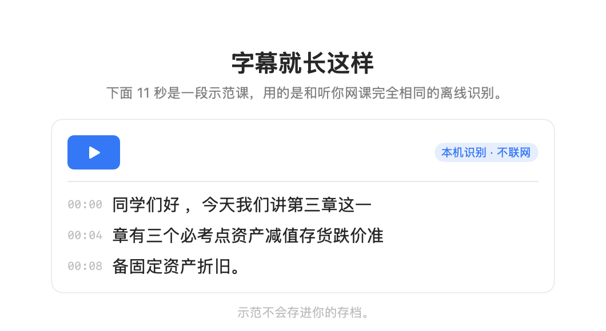

This page is in Chinese for now.
macOS 26+ · Apple Silicon
网课，边听边出字。
在 Mac 上放网课，它把电脑正在播放的声音实时变成字幕。 下课点「结束」，一份带时间戳的 Markdown 逐字稿已经在硬盘上了。
正在内测，还没有公开下载。装好后第一次启动会带你走三步，其中一步是听一段 11 秒的示范课。

它解决的是三件很小的事
走神一分钟，不用回拖
字幕一秒左右一句往上滚。低头记个笔记再抬头，刚才那句还在屏幕上。
下课不用再导一次
边录边写盘，每定稿一句就存一行。崩溃也不丢已经转出来的部分。
术语错了，一键改回来
苹果的识别对专业课术语不太行（「折旧」会听成「折救」）。 点「整理」，它会调用你自己配置的大模型，把错词改回来、断句、补标点。结果另存一份，原稿一个字都不动。
和系统自带的比
macOS 有「实时字幕」，免费、系统级，任何在放的声音都能出字。我们不一样的地方只有两点：它会留下稿子，以及能整理。
| 系统「实时字幕」 | 课堂字幕 | |
|---|---|---|
| 实时字幕 | 有 | 有 |
| 说完之后留下稿子 | 不留，窗口关了就没了 | 每句一行，带时间戳，自动存 Markdown |
| 课后改错字、断句 | 不做 | 一键整理，原稿不动 |
| 拖到副屏看 | 字幕固定在屏幕上 | 窗口随便拖 |
以 macOS 26 的「实时字幕」为准。Apple 每年改系统，这些可能变。
隐私：音频不上传，也不存
- 识别用 macOS 自带的 Speech 框架，在这台 Mac 上完成，声音不离开电脑。
- 不保存音频。声音取进来直接送进识别，不写磁盘——这个 App 里没有「录音」这个功能，只产出文字。
- 不用注册账号，没有云端，没有统计埋点。
- 「整理」需要联网，但发出去的只是文字，而且用的是你自己填的 API Key。
详见 隐私政策。
常见问题
它录我的屏幕吗？
它用的是 macOS 的「系统录音」权限——只碰声音，和屏幕没有关系，也不需要麦克风。 声音只在这台 Mac 上识别，不保存、不上传。
支持 Windows 吗？
暂时只有 Mac 版，需要 macOS 26 或更新、Apple Silicon（M 系列）。
能识别英文课吗？
当前只做了中文。换语言需要改引擎配置，还没有做界面支持。
「整理」非要配 API Key 吗？
是的。这个功能要调大模型，DeepSeek、通义、智谱、Moonshot 这些兼容 OpenAI 接口的都可以， 填一个 Key 就能用。不配也能用其余全部功能，只是不能整理。
稿子存在哪？
你本机的 ~/Library/Application Support/LiveClass/，
一节课一个 Markdown 文件，里面是一行一句、带 mm:ss 时间戳的正文。
想要的话，留个邮箱
内测版还没公开。留下邮箱，装好了我发给你，顺便问你几个问题——这一版就是照着这些问题做的。